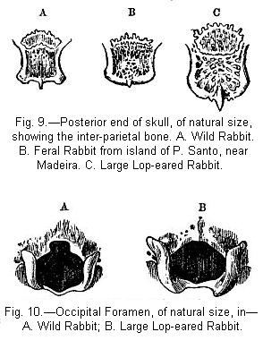
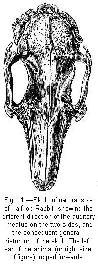
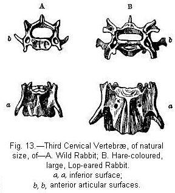
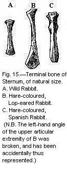
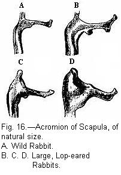

DOMESTIC RABBITS DESCENDED FROM THE COMMON WILD RABBIT — ANCIENT DOMESTICATION — ANCIENT SELECTION — LARGE LOP-EARED RABBITS — VARIOUS BREEDS — FLUCTUATING CHARACTERS — ORIGIN OF THE HIMALAYAN BREED — CURIOUS CASE OF INHERITANCE — FERAL RABBITS IN JAMAICA AND THE FALKLAND ISLANDS — PORTO SANTO FERAL RABBITS — OSTEOLOGICAL CHARACTERS — SKULL — SKULL OF HALF-LOP RABBITS — VARIATIONS IN THE SKULL ANALOGOUS TO DIFFERENCES IN DIFFERENT SPECIES OF HARES — VERtebræ — STERNUM — SCAPULA — EFFECTS OF USE AND DISUSE ON THE PROPORTIONS OF THE LIMBS AND BODY — CAPACITY OF THE SKULL AND REDUCED SIZE OF THE BRAIN — SUMMARY ON THE MODIFICATIONS OF DOMESTICATED RABBITS.
All naturalists, with, as far as I know, a single exception, believe that the several domestic breeds of the rabbit are descended from the common wild species; I shall therefore describe them more carefully than in the previous cases. Professor Gervais1 states "that the true wild rabbit is smaller than the domestic; its proportions are not absolutely the same; its tail is smaller; its ears are shorter and more thickly clothed with hair; and these characters, without speaking of colour, are so many indications opposed to the opinion which unites these animals under the same specific denomination." Few naturalists will agree with this author that such slight differences are sufficient to separate as distinct species the wild and domestic rabbit. How extraordinary it would be, if close confinement, perfect tameness, unnatural food, and careful breeding, all prolonged during many generations, had not produced at least some effect! The tame rabbit has been domesticated from an ancient period. Confucius ranges rabbits among animals worthy to be sacrificed to the gods, and, as he prescribes their multiplication, they were probably at this early period domesticated in China. They are mentioned by several of the classical writers. In 1631 Gervaise Markham writes, "You shall not, as in other cattell, looke to their shape, but to their richnesse, onely elect your buckes, the largest and goodliest conies you can get; and for the richnesse of the skin, that is accounted the richest which hath the equallest mixture of blacke and white haire together, yet the blacke rather shadowing the white; the furre should be thicke, deepe, smooth, and shining; ... they are of body much fatter and larger, and, when another skin is worth two or three pence, they are worth two shillings." From this full description we see that silver-grey rabbits existed in England at this period; and what is far more important, we see that the breeding or selection of rabbits was then carefully attended to. Aldrovandi, in 1637, describes, on the authority of several old writers (as Scaliger, in 1557), rabbits of various colours, some "like a hare," and he adds that P. Valerianus (who died a very old man in 1558) saw at Verona rabbits four times bigger than ours.2
From the fact of the rabbit having been domesticated at an ancient period, we must look to the northern hemisphere of the Old World, and to the warmer temperate regions alone, for the aboriginal parent-form; for the rabbit cannot live without protection in countries as cold as Sweden, and, though it has run wild in the tropical island of Jamaica, it has never greatly multiplied there. It now exists, and has long existed, in the warmer temperate parts of Europe, for fossil remains have been found in several countries.3 The domestic rabbit readily becomes feral in these same countries, and when variously coloured kinds are turned out they generally revert to the ordinary grey colour.4 Wild rabbits, if taken young, can be domesticated, though the process is generally very troublesome.5 The various domestic races are often crossed, and are believed to be quite fertile together, and a perfect gradation can be shown to exist from the largest domestic kinds, having enormously developed ears, to the common wild kind. The parent-form must have been a burrowing animal, a habit not common, as far as I can discover, to any other species in the large genus Lepus. Only one wild species is known with certainty to exist in Europe; but the rabbit (if it be a true rabbit) from Mount Sinai, and likewise that from Algeria, present slight differences; and these forms have been considered by some authors as specifically distinct.6 But such slight differences would aid us little in explaining the more considerable differences characteristic of the several domestic races. If the latter are the descendants of two or more closely allied species, these, with the exception of the common rabbit, have been exterminated in a wild state; and this is very improbable, seeing with what pertinacity this animal holds its ground. From these several reasons we may infer with safety that all the domestic breeds are the descendants of the common wild species. But from what we hear of the marvellous success in France in rearing hybrids between the hare and rabbit, it is possible, though not probable, from the great difficulty in making the first cross, that some of the larger races, which are coloured like the hare, may have been modified by crosses with this animal. Nevertheless, the chief differences in the skeletons of the several domestic breeds cannot, as we shall presently see, have been derived from a cross with the hare.
There are many breeds which transmit their characters more or less truly. Every one has seen the enormous lop-eared rabbits exhibited at our shows; various allied sub-breeds are reared on the Continent, such as the so-called Andalusian, which is said to have a large head with a round forehead, and to attain a greater size than any other kind; another large Paris breed is named the Rouennais, and has a square head; the so-called Patagonian rabbit has remarkably short ears and a large round head. Although I have not seen all these breeds, I feel some doubt about there being any marked difference in the shape of their skulls.8 English lop-eared rabbits often weigh 8 pounds or 10 pounds, and one has been exhibited weighing 18 pounds; whereas a full-sized wild rabbit weighs only about 3-1/4 pounds. The head or skull in all the large lop-eared rabbits examined by me is much longer relatively to its breadth than in the wild rabbit. Many of them have loose transverse folds of skin or dewlaps beneath the throat, which can be pulled out so as to reach nearly to the ends of the jaws. Their ears are prodigiously developed, and hang down on each side of their faces. A rabbit was exhibited in 1867 with its two ears, measured from the tip of one to the tip of the other, 22 inches in length, and each ear 5-3/8 inches in breadth. In 1869 one was exhibited with ears, measured in the same manner, 23-1/8 in length and 5-1/2 in breadth; "thus exceeding any rabbit ever exhibited at a prize show." In a common wild rabbit I found that the length of two ears, from tip to tip, was 7-5/8 inches, and the breadth only 1-7/8 inch. The weight of body in the larger rabbits, and the development of their ears, are the qualities which win prizes, and have been carefully selected.
The hare-coloured, or, as it is sometimes called, the Belgian rabbit, differs in nothing except colour from the other large breeds; but Mr. J. Young, of Southampton, a great breeder of this kind, informs me that the females, in all the specimens examined by him, had only six mammæ and this certainly was the case with two females which came into my possession. Mr. B. P. Brent, however, assures me that the number is variable with other domestic rabbits. The common wild rabbit always has ten mammæ. The Angora rabbit is remarkable from the length and fineness of its fur, which even on the soles of the feet is of considerable length. This breed is the only one which differs in its mental qualities, for it is said to be much more sociable than other rabbits, and the male shows no wish to destroy its young.9 Two live rabbits were brought to me from Moscow, of about the size of the wild species, but with long soft fur, different from that of the Angora. These Moscow rabbits had pink eyes and were snow-white, excepting the ears, two spots near the nose, the upper and under surface of the tail, and the hinder tarsi, which were blackish-brown. In short, they were coloured nearly like the so-called Himalayan rabbits, presently to be described, and differed from them only in the character of their fur. There are two other breeds which come true to colour, but differ in no other respect, namely silver-greys and chinchillas. Lastly, the Nicard or Dutch rabbit may be mentioned, which varies in colour, and is remarkable from its small size, some specimens weighing only 1-1/4 pounds; rabbits of this breed make excellent nurses for other and more delicate kinds.10
Certain characters are remarkably fluctuating, or are very feebly transmitted by domestic rabbits: thus, one breeder tells me that with the smaller kinds he has hardly ever raised a whole litter of the same colour: with the large lop-eared breeds "it is impossible," says a great judge,11 "to breed true to colour, but by judicious crossing a great deal may be done towards it. The fancier should know how his does are bred, that is, the colour of their parents." Nevertheless, certain colours, as we shall presently see, are transmitted truly. The dewlap is not strictly inherited. Lop-eared rabbits, with their ears hanging down flat on each side of the face, do not transmit this character at all truly. Mr. Delamer remarks that, "with fancy rabbits, when both the parents are perfectly formed, have model ears, and are handsomely marked, their progeny do not invariably turn out the same." When one parent, or even both, are oar-laps, that is, have their ears sticking out at right angles, or when one parent or both are half-lops, that is, have only one ear dependent, there is nearly as good a chance of the progeny having both ears full-lop, as if both parents had been thus characterised. But I am informed, if both parents have upright ears, there is hardly a chance of a full-lop. In some half-lops the ear that hangs down is broader and longer than the upright ear;12 so that we have the unusual case of a want of symmetry on the two sides. This difference in the position and size of the two ears probably indicates that the lopping results from the great length and weight of the ear, favoured no doubt by the weakness of the muscles consequent on disuse. Anderson13 mentions a breed having only a single ear; and Professor Gervais another breed destitute of ears.
We come now to the Himalayan breed, which is sometimes called Chinese, Polish, or Russian. These pretty rabbits are white, or occasionally yellow, excepting their ears, nose, feet, and the upper side of the tail, which are all brownish-black; but as they have red eyes, they may be considered as albinoes. I have received several accounts of their breeding perfectly true. From their symmetrical marks, they were at first ranked as specifically distinct, and were provisionally named L. nigripes.14 Some good observers thought that they could detect a difference in their habits, and stoutly maintained that they formed a new species. The origin of this breed is so curious, both in itself and as throwing some light on the complex laws of inheritance that it is worth giving in detail. But it is first necessary briefly to describe two other breeds: silver-greys or silver-sprigs generally have black heads and legs, and their fine grey fur is interspersed with numerous black and white long hairs. They breed perfectly true, and have long been kept in warrens. When they escape and cross with common rabbits, the product, as I hear from Mr. Wyrley Birch, of Wretham Hall, is not a mixture of the two colours, but about half take after the one parent, and the other half after the other parent. Secondly, chinchillas or tame silver-greys (I will use the former name) have short, paler, mouse or slate-coloured fur, interspersed with long, blackish, slate-coloured, and white hairs.15 These rabbits breed perfectly true. A writer stated in 185716 that he had produced Himalayan rabbits in the following manner. He had a breed of chinchillas which had been crossed with the common black rabbit, and their offspring were either blacks or chinchillas. These latter were again crossed with other chinchillas (which had also been crossed with silver-greys), and from this complicated cross Himalayan rabbits were raised. From these and other similar statements, Mr. Bartlett17 was led to make a careful trial in the Zoological Gardens, and he found that by simply crossing silver-greys with chinchillas he could always produce some few Himalayans; and the latter, notwithstanding their sudden origin, if kept separate, bred perfectly true. But I have recently been assured the pure silver-greys of any sub-breed occasionally produce Himalayans.
The Himalayans, when first born, are quite white, and are then true albinoes; but in the course of a few months they gradually assume their dark ears, nose, feet, and tail. Occasionally, however, as I am informed by Mr. W. A. Wooler and the Rev. W. D. Fox, the young are born of a very pale grey colour, and specimens of such fur were sent me by the former gentleman. The grey tint, however, disappears as the animal comes to maturity. So that with these Himalayans there is a tendency, strictly confined to early youth, to revert to the colour of the adult silver-grey parent-stock. Silver-greys and chinchillas, on the other hand, present a remarkable contrast with the Himalayans in their colour whilst quite young, for they are born perfectly black, but soon assume their characteristic grey or silver tints. The same thing occurs with grey horses, which, as long as they are foals, are generally of a nearly black colour, but soon become grey, and get whiter and whiter as they grow older. Hence the usual rule is that Himalayans are born white and afterwards become in certain parts of their bodies dark-coloured; whilst silver-greys are born black and afterwards become sprinkled with white. Exceptions, however, and of a directly opposite nature, occasionally occur in both cases. For young silver-greys are sometimes born in warrens, as I hear from Mr. W. Birch, of a cream-colour, but these young animals ultimately become black. The Himalayans, on the other hand, sometimes produce, as is stated by an experienced amateur,18 a single black young one in a litter; and this, before two months elapse, becomes perfectly white.
To sum up the whole curious case: wild silver-greys may be considered as black rabbits which become grey at an early period of life. When they are crossed with common rabbits, the offspring are said not to have blended colours, but to take after either parent; and in this respect they resemble black and albino varieties of most quadrupeds, which often transmit their colours in this same manner. When they are crossed with chinchillas, that is, with a paler sub-variety, the young are at first pure albinoes, but soon become dark-coloured in certain parts of their bodies, and are then called Himalayans. The young Himalayans, however, are sometimes at first either pale grey or completely black, in either case changing after a time to white. In a future chapter I shall advance a large body of facts showing that, when two varieties are crossed both of which differ in colour from their parent-stock, there is a strong tendency in the young to revert to the aboriginal colour; and what is very remarkable, this reversion occasionally supervenes, not before birth, but during the growth of the animal. Hence, if it could be shown that silver-greys and chinchillas were the offspring of a cross between a black and albino variety with the colours intimately blended—a supposition in itself not improbable, and supported by the circumstance of silver-greys in warrens sometimes producing creamy-white young, which ultimately become black—then all the above given paradoxical facts on the changes of colour in silver-greys and in their descendants the Himalayans would come under the law of reversion, supervening at different periods of growth and in different degrees, either to the original black or to the original albino parent-variety.
It is, also, remarkable that Himalayans, though produced so suddenly; breed true. But as, whilst young, they are albinoes, the case falls under a very general rule; albinism being well known to be strongly inherited, for instance with white mice and many other quadrupeds, and even white flowers. But why, it may be asked, do the ears, tail, nose, and feet, and no other part of the body, revert to a black colour? This apparently depends on a law, which generally holds good, namely, that characters common to many species of a genus—and this, in fact, implies long inheritance from the ancient progenitor of the genus—are found to resist variation, or to reappear if lost, more persistently than the characters which are confined to the separate species. Now, in the genus Lepus, a large majority of the species have their ears and the upper surface of the tail tinted black; but the persistence of these marks is best seen in those species which in winter become white: thus, in Scotland the L. variabilis19 in its winter dress has a shade of colour on its nose, and the tips of its ears are black: in the L. tibetanus the ears are black, the upper surface of the tail greyish-black, and the soles of the feet brown: in L. glacialis the winter fur is pure white, except the soles of the feet and the points of the ears. Even in the variously-coloured fancy rabbits we may often observe a tendency in these same parts to be more darkly tinted than the rest of the body. Thus the several coloured marks on the Himalayan rabbits, as they grow old, are rendered intelligible. I may add a nearly analogous case: fancy rabbits very often have a white star on their foreheads; and the common English hare, whilst young, generally has, as I have myself observed, a similar white star on its forehead.
When variously coloured rabbits are set free in Europe, and are thus placed under their natural conditions, they generally revert to the aboriginal grey colour; this may be in part due to the tendency in all crossed animals, as lately observed, to revert to their primordial state. But this tendency does not always prevail; thus silver-grey rabbits are kept in warrens, and remain true though living almost in a state of nature; but a warren must not be stocked with both silver-greys and common rabbits; otherwise "in a few years there will be none but common greys surviving."20 When rabbits run wild in foreign countries under new conditions of life, they by no means always revert to their aboriginal colour. In Jamaica the feral rabbits are described as having been "slate-coloured, deeply tinted with sprinklings of white on the neck, on the shoulders, and on the back; softening off to blue-white under the breast and belly."21 But in this tropical island the conditions were not favourable to their increase, and they never spread widely, and are now extinct, as I hear from Mr. R. Hill, owing to a great fire which occurred in the woods. Rabbits during many years have run wild in the Falkland Islands; they are abundant in certain parts, but do not spread extensively. Most of them are of the common grey colour; a few, as I am informed by Admiral Sulivan, are hare-coloured, and many are black, often with nearly symmetrical white marks on their faces. Hence, M. Lesson described the black variety as a distinct species, under the name of Lepus magellanicus, but this, as I have elsewhere shown, is an error.22 Within recent times the sealers have stocked some of the small outlying islets in the Falkland group with rabbits; and on Pebble Islet, as I hear from Admiral Sulivan, a large proportion are hare-coloured, whereas on Rabbit Islet a large proportion are of a bluish colour, which is not elsewhere seen. How the rabbits were coloured which were turned out of these islets is not known.
The rabbits which have become feral on the island of Porto Santo, near Madeira, deserve a fuller account. In 1418 or 1419, J. Gonzales Zarco23 happened to have a female rabbit on board which had produced young during the voyage, and he turned them all out on the island. These animals soon increased so rapidly, that they became a nuisance, and actually caused the abandonment of the settlement. Thirty-seven years subsequently, Cada Mosto describes them as innumerable; nor is this surprising, as the island was not inhabited by any beast of prey or by any terrestrial mammal. We do not know the character of the mother-rabbit; but it was probably the common domesticated kind. The Spanish peninsula, whence Zarco sailed, is known to have abounded with the common wild species at the most remote historical period; and as these rabbits were taken on board for food, it is improbable that they should have been of any peculiar breed. That the breed was well domesticated is shown by the doe having littered during the voyage. Mr. Wollaston, at my request, brought home two of these feral rabbits in spirits of wine; and, subsequently, Mr. W. Haywood sent to me three more specimens in brine, and two alive. These seven specimens, though caught at different periods, closely resembled each other. They were full grown, as shown by the state of their bones. Although the conditions of life in Porto Santo are evidently highly favourable to rabbits, as proved by their extraordinarily rapid increase, yet they differ conspicuously in their small size from the wild English rabbit. Four English rabbits, measured from the incisors to the anus, varied between 17 and 17-3/4 inches in length; whilst two of the Porto Santo rabbits were only 14-1/2 and 15 inches in length. But the decrease in size is best shown by weight; four wild English rabbits averaged 3 pounds 5 ounces, whilst one of the Porto Santo rabbits, which had lived for four years in the Zoological Gardens, but had become thin, weighed only 1 pound 9 ounces. A fairer test is afforded by the comparison of the well-cleaned limb-bones of a Porto Santo rabbit killed on the island with the same bones of a wild English rabbit of average size, and they differed in the proportion of rather less than five to nine. So that the Porto Santo rabbits have decreased nearly three inches in length, and almost half in weight of body.24 The head has not decreased in length proportionally with the body; and the capacity of the brain case is, as we shall hereafter see, singularly variable. I prepared four skulls, and these resembled each other more closely than do generally the skulls of wild English rabbits; but the only difference in structure which they presented was that the supra-orbital processes of the frontal bones were narrower.
In colour the Porto Santo rabbit differs considerably from the common rabbit; the upper surface is redder, and is rarely interspersed with any black or black-tipped hairs. The throat and certain parts of the under surface, instead of being pure white, are generally pale grey or leaden colour. But the most remarkable difference is in the ears and tail; I have examined many fresh English rabbits, and the large collection of skins in the British Museum from various countries, and all have the upper surface of the tail and the tips of the ears clothed with blackish-grey fur; and this is given in most works as one of the specific characters of the rabbit. Now in the seven Porto Santo rabbits the upper surface of the tail was reddish-brown, and the tips of the ears had no trace of the black edging. But here we meet with a singular circumstance: in June, 1861 I examined two of these rabbits recently sent to the Zoological Gardens, and their tails and ears were coloured as just described; but when one of their dead bodies was sent to me in February, 1865, the ears were plainly edged, and the upper surface of the tail was covered with blackish-grey fur, and the whole body was much less red; so that under the English climate this individual rabbit had recovered the proper colour of its fur in rather less than four years!
The two little Porto Santo rabbits, whilst alive in the Zoological Gardens, had a remarkably different appearance from the common kind. They were extraordinarily wild and active, so that many persons exclaimed on seeing them that they were more like large rats than rabbits. They were nocturnal to an unusual degree in their habits, and their wildness was never in the least subdued; so that the superintendent, Mr. Bartlett, assured me that he had never had a wilder animal under his charge. This is a singular fact, considering that they are descended from a domesticated breed. I was so much surprised at it, that I requested Mr. Haywood to make inquiries on the spot, whether they were much hunted by the inhabitants, or persecuted by hawks, or cats, or other animals; but this is not the case, and no cause can be assigned for their wildness. They live both on the central, higher rocky land and near the sea-cliffs, and, from being exceedingly shy and timid, seldom appear in the lower and cultivated districts. They are said to produce from four to six young at a birth, and their breeding season is in July and August. Lastly, and this is a highly remarkable fact, Mr. Bartlett could never succeed in getting these two rabbits, which were both males, to associate or breed with the females of several breeds which were repeatedly placed with them.
If the history of these Porto Santo rabbits had not been known, most naturalists, on observing their much reduced size, their colour, reddish above and grey beneath, their tails and ears not tipped with black, would have ranked them as a distinct species. They would have been strongly confirmed in this view by seeing them alive in the Zoological Gardens, and hearing that they refused to couple with other rabbits. Yet this rabbit, which there can be little doubt would thus have been ranked as a distinct species, as certainly originated since the year 1420. Finally, from the three cases of the rabbits which have run wild in Porto Santo, Jamaica, and the Falkland Islands, we see that these animals do not, under new conditions of life, revert to or retain their aboriginal character, as is so generally asserted to be the case by most authors.
When we remember, on the one hand, how frequently it is stated that important parts of the structure never vary; and, on the other hand, on what small differences in the skeleton fossil species have often been founded, the variability of the skull and of some other bones in the domesticated rabbit well deserves attention. It must not be supposed that the more important differences immediately to be described strictly characterise any one breed; all that can be said is, that they are generally present in certain breeds. We should bear in mind that selection has not been applied to fix any character in the skeleton, and that the animals have not had to support themselves under uniform habits of life. We cannot account for most of the differences in the skeleton; but we shall see that the increased size of the body, due to careful nurture and continued selection, has affected the head in a particular manner. Even the elongation and lopping of the ears have influenced in a small degree the form of the whole skull. The want of exercise has apparently modified the proportional length of the limbs in comparison with that of the body.
As a standard of comparison, I prepared skeletons of two wild rabbits from Kent, one from the Shetland Islands, and one from Antrim in Ireland. As all the bones in these four specimens from such distant localities closely resembled each other, presenting scarcely any appreciable difference, it may be concluded that the bones of the wild rabbit are generally uniform in character.
Skull.—I have carefully examined skulls of ten large lop-eared rabbits, and of five common domestic rabbits, which latter differ from the lop-eared only in not having such large bodies or ears, yet both larger than in the wild rabbit. First for the ten lop-eared rabbits: in all these the skull is remarkably elongated in comparison with its breadth. In a wild rabbit the length was 3·15 inches, in a large fancy rabbit 4·3; whilst the breadth of the cranium enclosing the brain was in both almost exactly the same. Even by taking as the standard of comparison the widest part of the zygomatic arch, the skulls of the lop-eared are proportionally to their breadth three-quarters of an inch too long. The depth of the head has increased almost in the same proportion with the length; it is the breadth alone which has not increased. The parietal and occipital bones enclosing the brain are less arched, both in a longitudinal and transverse line, than in the wild rabbit, so that the shape of the cranium is somewhat different. The surface is rougher, less cleanly sculptured, and the lines of sutures are more prominent.
Although the skulls of the large lop-eared rabbits in comparison with those of the wild rabbit are much elongated relatively to their breadth, yet, relatively to the size of body, they are far from elongated. The lop-eared rabbits which I examined were, though not fat, more than twice as heavy as the wild specimens; but the skull was very far from being twice as long. Even if we take the fairer standard of the length of body, from the nose to the anus, the skull is not on an average as long as it ought to be by a third of an inch. In the small feral Porto Santo rabbit, on the other hand, the head relatively to the length of body is about a quarter of an inch too long.
This elongation of the skull relatively to its breadth, I find a universal character, not only with the large lop-eared rabbits, but in all the artificial breeds; as is well seen in the skull of the Angora. I was at first much surprised at the fact, and could not imagine why domestication could produce this uniform result; but the explanation seems to lie in the circumstance that during a number of generations the artificial races have been closely confined, and have had little occasion to exert either their senses, or intellect, or voluntary muscles; consequently the brain, as we shall presently more fully see, has not increased relatively with the size of body. As the brain has not increased, the bony case enclosing it has not increased, and this has evidently affected through correlation the breadth of the entire skull from end to end.
In all the skulls of the large lop-eared rabbits, the supra-orbital plates or processes of the frontal bones are much broader than in the wild rabbit, and they generally project more upwards. In the zygomatic arch the posterior or projecting point of the malar-bone is broader and blunter; and in the specimen, fig. 8, it is so in a remarkable degree. This point approaches nearer to the auditory meatus than in the wild rabbit, as may be best seen in fig. 8; but this circumstance mainly depends on the changed direction of the meatus. The inter-parietal bone (see fig. 9) differs much in shape in the several skulls; generally it is more oval, that is more extended in the line of the longitudinal axis of the skull, than in the wild rabbit. The posterior margin of "the square raised platform"25 of the occiput, instead of being truncated, or projecting slightly as in the wild rabbit, is in most lop-eared rabbits pointed, as in fig. 9, C. The paramastoids relatively to the size of the skull are generally much thicker than in the wild rabbit.
The occipital foramen (fig. 10) presents some remarkable differences: in the wild rabbit, the lower edge between the condyles is considerably and almost angularly hollowed out, and the upper edge is deeply and squarely notched; hence the longitudinal axis exceeds the transverse axis. In the skulls of the lop-eared rabbits the transverse axis exceeds the longitudinal; for in none of these skulls was the lower edge between the condyles so deeply hollowed out; in five of them there was no upper square notch, in three there was a trace of the notch, and in two alone it was well developed. These differences in the shape of the foramen are remarkable, considering that it gives passage to so important a structure as the spinal marrow, though apparently the outline of the latter is not affected by the shape of the passage.
In all the skulls of the large lop-eared rabbits, the bony auditory meatus is conspicuously larger than in the wild rabbit. In a skull 4·3 inches in length, and which barely exceeded in breadth the skull of a wild rabbit (which was 3·15 inches in length), the longer diameter of the meatus was exactly twice as great. The orifice is more compressed, and its margin on the side nearest the skull stands up higher than the outer side. The whole meatus is directed more forwards. As in breeding lop-eared rabbits the length of the ears, and their consequent lopping and lying flat on the face, are the chief points of excellence, there can hardly be a doubt that the great change in the size, form, and direction of the bony meatus, relatively to this same part in the wild rabbit, is due to the continued selection of individuals having larger and larger ears. The influence of the external ear on the bony meatus is well shown in the skulls (I have examined three) of half-lops (see fig. 5), in which one ear stands upright, and the other and longer ear hangs down; for in these skulls there was a plain difference in the form and direction of the bony meatus on the two sides. But it is a much more interesting fact, that the changed direction and increased size of the bony meatus have slightly affected on the same side the structure of the whole skull. I here give a drawing (fig. 11) of the skull of a half-lop; and it may be observed that the suture between the parietal and frontal bones does not run strictly at right angles to the longitudinal axis of the skull; the left frontal bone projects beyond the right one; both the posterior and anterior margins of the left zygomatic arch on the side of the lopping ear stand a little in advance of the corresponding bones on the opposite side. Even the lower jaw is affected, and the condyles are not quite symmetrical, that on the left standing a little in advance of that on the right. This seems to me a remarkable case of correlation of growth. Who would have surmised that by keeping an animal during many generations under confinement, and so leading to the disuse of the muscles of the ears, and by continually selecting individuals with the longest and largest ears, he would thus indirectly have affected almost every suture in the skull and the form of the lower jaw!
In the large lop-eared rabbits the only difference in the lower jaw, in comparison with that of the wild rabbit, is that the posterior margin of the ascending ramus is broader and more inflected. The teeth in neither jaw present any difference, except that the small incisors, beneath the large ones, are proportionately a little longer. The molar teeth have increased in size proportionately with the increased width of the skull, measured across the zygomatic arch, and not proportionally with its increased length. The inner line of the sockets of the molar teeth in the upper jaw of the wild rabbit forms a perfectly straight line; but in some of the largest skulls of the lop-eared this line was plainly bowed inwards. In one specimen there was an additional molar tooth on each side of the upper jaw, between the molars and premolars; but these two teeth did not correspond in size; and as no rodent has seven molars, this is merely a monstrosity, though a curious one.
The five other skulls of common domestic rabbits, some of which approach in size the above-described largest skulls, whilst the others exceed but little those of the wild rabbit, are only worth notice as presenting a perfect gradation in all the above-specified differences between the skulls of the largest lop-eared and wild rabbits. In all, however, the supra-orbital plates are rather larger, and in all the auditory meatus is larger, in conformity with the increased size of the external ears, than in the wild rabbit. The lower notch in the occipital foramen in some was not so deep as in the wild rabbit, but in all five skulls the upper notch was well developed.
The skull of the Angora rabbit, like the latter five skulls, is intermediate in general proportions, and in most other characters, between those of the largest lop-eared and wild rabbits. It presents only one singular character: though considerably longer than the skull of the wild rabbit, the breadth measured within the posterior supra-orbital fissures is nearly a third less than in the wild. The skulls of the silver-grey, and chinchilla and Himalayan rabbits are more elongated than in the wild, with broader supra-orbital plates, but differ little in any other respect, excepting that the upper and lower notches of the occipital foramen are not so deep or so well developed. The skull of the Moscow rabbit scarcely differs at all from that of the wild rabbit. In the Porto Santo feral rabbits the supra-orbital plates are generally narrower and more pointed than in our wild rabbits.
As some of the largest lop-eared rabbits of which I prepared skeletons were coloured almost like hares, and as these latter animals and rabbits have, as it is affirmed, been recently crossed in France, it might be thought that some of the above-described characters had been derived from a cross at a remote period with the hare. Consequently I examined skulls of the hare, but no light could thus be thrown on the peculiarities of the skulls of the larger rabbits. It is, however, an interesting fact, as illustrating the law that varieties of one species often assume the characters of other species of the same genus, that I found, on comparing the skulls of ten species of hares in the British Museum, that they differed from each other chiefly in the very same points in which domestic rabbits vary,—namely, in general proportions, in the form and size of the supra-orbital plates, in the form of the free end of the malar bone, and in the line of suture separating the occipital and frontal bones. Moreover two eminently variable characters in the domestic rabbit, namely, the outline of the occipital foramen and the shape of the "raised platform" of the occiput, were likewise variable in two instances in the same species of hare.
Vertebræ.—The number is uniform in all the skeletons which I have examined, with two exceptions, namely, in one of the small feral Porto Santo rabbits and in one of the largest lop-eared kinds; both of these had as usual seven cervical, twelve dorsal with ribs, but, instead of seven lumbar, both had eight lumbar vertebræ. This is remarkable, as Gervais gives seven as the number for the whole genus Lepus. The caudal vertebræ apparently differ by two or three, but I did not attend to them, and they are difficult to count with certainty.
In the first cervical vertebra, or atlas, the anterior margin of the neural arch varies a little in wild specimens, being either nearly smooth, or furnished with a small supra-median atlantoid process; I have figured a specimen with the largest process (a) which I have seen; but it will be observed how inferior this is in size and different in shape to that in a large lop-eared rabbit. In the latter, the infra-median process (b) is also proportionally much thicker and longer. The alæ are a little squarer in outline.
Third cervical vertebra.—In the wild rabbit (fig. 13, A a) this vertebra, viewed on the inferior surface, has a transverse process, which is directed obliquely backwards, and consists of a single pointed bar; in the fourth vertebra this process is slightly forked in the middle. In the large lop-eared rabbits this process (B a) is forked in the third vertebra, as in the fourth of the wild rabbit. But the third cervical vertebræ of the wild and lop-eared (A b, B b) rabbits differ more conspicuously when their anterior articular surfaces are compared; for the extremities of the antero-dorsal processes in the wild rabbit are simply rounded, whilst in the lop-eared they are trifid, with a deep central pit. The canal for the spinal marrow in the lop-eared (B b) is more elongated in a transverse direction than in the wild rabbit; and the passages for the arteries are of a slightly different shape. These several differences in this vertebra seem to me well deserving attention.
First dorsal vertebra.—Its neural spine varies in length in the wild rabbit; being sometimes very short, but generally more than half as long as that of the second dorsal; but I have seen it in two large lop-eared rabbits three-fourths of the length of that of the second dorsal vertebra.
Ninth and tenth dorsal vertebræ.—In the wild rabbit the neural spine of the ninth vertebra is just perceptibly thicker than that of the eighth; and the neural spine of the tenth is plainly thicker and shorter than those of all the anterior vertebræ. In the large lop-eared rabbits the neural spines of the tenth, ninth, and eighth vertebræ, and even in a slight degree that of the seventh, are very much thicker, and of somewhat different shape, in comparison with those of the wild rabbit. So that this part of the vertebral column differs considerably in appearance from the same part in the wild rabbit, and closely resembles in an interesting manner these same vertebræ in some species of hares. In the Angora, Chinchilla, and Himalayan rabbits, the neural spines of the eighth and ninth vertebræ are in a slight degree thicker than in the wild. On the other hand, in one of the feral Porto Santo rabbits, which in most of its characters deviates from the common wild rabbit, in a direction exactly opposite to that assumed by the large lop-eared rabbits, the neural spines of the ninth and tenth vertebræ were not at all larger than those of the several anterior vertebra. In this same Porto Santo specimen there was no trace in the ninth vertebra of the anterior lateral processes (see fig. 14), which are plainly developed in all British wild rabbits, and still more plainly developed in the large lop-eared rabbits. In a half-wild rabbit from Sandon Park,26 a haemal spine was moderately well developed on the under side of the twelfth dorsal vertebra, and I have seen this in no other specimen.
Lumbar vertebræ.—I have stated that in two cases there were eight instead of seven lumbar vertebræ. The third lumbar vertebræ in one skeleton of a wild British rabbit, and in one of the Porto Santo feral rabbits, had a haemal spine; whilst in four skeletons of large lop-eared rabbits, and in the Himalayan rabbit, this same vertebra had a well developed hæmal spine.
Pelvis.—In four wild specimens this bone was almost absolutely identical in shape; but in several domesticated breeds shades of differences could be distinguished. In the large lop-eared rabbits, the whole upper part of the ilium is straighter, or less splayed outwards, than in the wild rabbit; and the tuberosity on the inner lip of the anterior and upper part of the ilium is proportionally more prominent.
Sternum.—The posterior end of the posterior sternal bone in the wild rabbit (fig. 15, A) is thin and slightly enlarged; in some of the large lop-eared rabbits (B) it is much more enlarged towards the extremity; whilst in other specimens (C) it keeps nearly of the same breadth from end to end, but is much thicker at the extremity.
Scapula.—The acromion sends out a rectangular bar, ending in an oblique knob, which latter in the wild rabbit (fig. 16, A) varies a little in shape and size, as does the apex of the acromion in sharpness, and the part just below the rectangular bar in breadth. But the variations in these respects in the wild rabbit are very slight: whilst in the large lop-eared rabbits they are considerable. Thus in some specimens (B) the oblique terminal knob is developed into a short bar, forming an obtuse angle with the rectangular bar. In another specimen (C) these two unequal bars form nearly a straight line. The apex of the acromion varies much in breadth and sharpness, as may be seen by comparing figures B, C, and D.
Limbs.—In these I could detect no variation; but the bones of the feet were too troublesome to compare with much care.
I have now described all the differences in the skeletons which I have observed. It is impossible not to be struck with the high degree of variability or plasticity of many of the bones. We see how erroneous the often-repeated statement is, that only the crests of the bones which give attachment to muscles vary in shape, and that only parts of slight importance become modified under domestication. No one will say, for instance, that the occipital foramen, or the atlas, or the third cervical vertebra is a part of slight importance. If the several vertebræ of the wild and lop-eared rabbits, of which figures have been given, had been found fossil, palæontologists would have declared without hesitation that they had belonged to distinct species.
The effects of the use and disuse of parts.—In the large lop-eared rabbits the relative proportional length of the bones of the same leg, and of the front and hind legs compared with each other, have remained nearly the same as in the wild rabbit; but in weight, the bones of the hind legs apparently have not increased in due proportion with the front legs. The weight of the whole body in the large rabbits examined by me was from twice to twice and a half as great as that of the wild rabbit; and the weight of the bones of the front and hind limbs taken together (excluding the feet, on account of the difficulty of cleaning so many small bones) has increased in the large lop-eared rabbits in nearly the same proportion; consequently in due proportion to the weight of body which they have to support. If we take the length of the body as the standard of comparison, the limbs of the large rabbits have not increased in length in due proportion by one inch and a half. Again, if we take as the standard of comparison the length of the skull, which, as we have before seen, has not increased in length in due proportion to the length of body, the limbs will be found to be, proportionally with those of the wild rabbit, from half to three-quarters of an inch too short. Hence, whatever standard of comparison be taken, the limb-bones of the large lop-eared rabbits have not increased in length, though they have in weight, in full proportion to the other parts of the frame; and this, I presume, may be accounted for by the inactive life which during many generations they have spent. Nor has the scapula increased in length in due proportion to the increased length of the body.
The capacity of the osseous case of the brain is a more interesting point, to which I was led to attend by finding, as previously stated, that with all domesticated rabbits the length of the skull relatively to its breadth has greatly increased in comparison with that of the wild rabbits. If we had possessed a large number of domesticated rabbits of nearly the same size with the wild rabbits, it would have been a simple task to have measured and compared the capacities of their skulls. But this is not the case: almost all the domestic breeds have larger bodies than wild rabbits, and the lop-eared kinds are more than double their weight. As a small animal has to exert its senses, intellect, and instincts equally with a large animal, we ought not by any means to expect an animal twice or thrice as large as another to have a brain of double or treble the size.27 Now, after weighing the bodies of four wild rabbits, and of four large but not fattened lop-eared rabbits, I find that on an average the wild are to the lop-eared in weight as 1 to 2·17; in average length of body as 1 to 1·41; whilst in capacity of skull they are as 1 to 1·15. Hence we see that the capacity of the skull, and consequently the size of the brain, has increased but little, relatively to the increased size of the body; and this fact explains the narrowness of the skull relatively to its length in all domestic rabbits.
| I | II | III | IV | ||
| Name of Breed WILD AND SEMI-WILD RABBITS. |
Length of Skull. |
Length of Body from Incisors to Anus. |
Weight of whole Body. |
Capacity of Skull measured by Small Shot. |
|
| inches | inches | lbs ozs | grains | ||
| 1 | Wild Rabbit, Kent | 3·15 | 17·4 | 3 5 | 972 |
| 2 | Wild Rabbit, Shetland Islands | 3·15 | -- | -- | 979 |
| 3 | Wild Rabbit, Ireland | 3·15 | -- | -- | 992 |
| 4 | Domestic rabbit, run wild, Sandon | 3·15 | 18·5 | -- | 997 |
| 5 | Wild, common variety, small specimen, Kent | 2·96 | 17·0 | 2 14 | 875 |
| 6 | Wild, fawn-coloured variety, Scotland | 3·10 | -- | -- | 918 |
| 7 | Silver-grey, small specimen, Thetford warren | 2·95 | 15·5 | 2 11 | 938 |
| 8 | Feral rabbit, Porto Santo | 2·83 | -- | -- | 893 |
| 9 | Feral rabbit, Porto Santo | 2·85 | -- | -- | 756 |
| 10 | Feral Rabbit, Porto Santo | 2·95 | -- | -- | 835 |
| Average of the three Porto Santo rabbits | 2·88 | -- | -- | 828 | |
| DOMESTIC RABBITS. | |||||
| 11 | Himalayan | 3·50 | 20·5 | -- | 963 |
| 12 | Moscow | 3·25 | 17·0 | 3 8 | 803 |
| 13 | Angora | 3·50 | 19·5 | 3 1 | 697 |
| 14 | Chinchilla | 3·65 | 22·0 | -- | 995 |
| 15 | Large lop-eared | 4·10 | 24·5 | 7 0 | 1065 |
| 16 | Large lop-eared | 4·10 | 25·0 | 7 13 | 1153 |
| 17 | Large lop-eared | 4·07 | -- | -- | 1037 |
| 18 | Large lop-eared | 4·10 | 25·0 | 7 4 | 1208 |
| 19 | Large lop-eared | 4·30 | -- | -- | 1232 |
| 20 | Large lop-eared | 4·25 | -- | -- | 1124 |
| 21 | Large hare-coloured | 3·86 | 24·0 | 6 14 | 1131 |
| 22 | Average of above seven large lop-eared rabbits | 4·11 | 24·62 | 7 4 | 1136 |
| 23 | Hare (L. timidus) English specimen | 3·61 | -- | 7 0 | 1315 |
| 24 | Hare (L. timidus) German specimen | 3·82 | -- | 7 0 | 1415 |
| V | VI | VII | ||
| Name of Breed WILD AND SEMI-WILD RABBITS. |
Capacity calculated according to Length of Skull relatively to that of No. 1. |
Difference between actual and calculated capacities of Skulls. |
Showing how much per cent. the Brain, by calculation according to the length of the Skull is too light or too heavy, relatively to the Brain of the Wild Rabbit No. 1. |
|
| grains | grains | |||
| 1 | Wild Rabbit, Kent | -- | -- | |
| 2 | Wild Rabbit, Shetland Islands | -- | -- | 2 per cent. too heavy in comparison with No. 1 |
| 3 | Wild Rabbit, Ireland | -- | -- | |
| 4 | Domestic rabbit, run wild, Sandon | |||
| 5 | Wild, common variety, small specimen, Kent | 913 | 38 | 4 per cent. too light. |
| 6 | Wild, fawn-coloured variety, Scotland | 950 | 32 | 3 per cent. too light. |
| 7 | Silver-grey, small specimen, Thetford warren | 910 | 28 | 3 per cent. too heavy. |
| 8 | Feral rabbit, Porto Santo | 873 | 20 | 2 per cent. too heavy. |
| 9 | Feral rabbit, Porto Santo | 879 | 123 | 16 per cent. too light. |
| 10 | Feral Rabbit, Porto Santo | 910 | 75 | 9 per cent. too light. |
| Average of the three Porto Santo rabbits | 888 | 60 | 7 per cent. too light. | |
| DOMESTIC RABBITS. | ||||
| 11 | Himalayan | 1080 | 117 | 12 per cent. too light. |
| 12 | Moscow | 1002 | 199 | 24 per cent. too light. |
| 13 | Angora | 1080 | 383 | 54 per cent. too light. |
| 14 | Chinchilla | 1126 | 131 | 13 per cent. too light. |
| 15 | Large lop-eared | 1265 | 200 | 18 per cent. too light. |
| 16 | Large lop-eared | 1265 | 112 | 9 per cent. too light. |
| 17 | Large lop-eared | 1255 | 218 | 21 per cent. too light. |
| 18 | Large lop-eared | 1265 | 57 | 4 per cent. too light. |
| 19 | Large lop-eared | 1326 | 94 | 7 per cent. too light. |
| 20 | Large lop-eared | 1311 | 187 | 16 per cent. too light. |
| 21 | Large hare-coloured | 1191 | 60 | 5 per cent. too light. |
| 22 | Average of above seven large lop-eared rabbits | 1268 | 132 | 11 per cent. too light. |
In the upper half of Table 3 I have given the measurements of the skull of ten wild rabbits; and in the lower half, of eleven thoroughly domesticated kinds. As these rabbits differ so greatly in size, it is necessary to have some standard by which to compare the capacities of their skulls. I have selected the length of skull as the best standard, for in the larger rabbits it has not, as already stated, increased in length so much as the body; but as the skull, like every other part, varies in length, neither it nor any other part affords a perfect standard.
In the first column of figures the extreme length of the skull is given in inches and decimals. I am aware that these measurements pretend to greater accuracy than is possible; but I have found it the least trouble to record the exact length which the compass gave. The second and third columns give the length and weight of body, whenever these observations were made. The fourth column gives the capacity of the skull by the weight of small shot with which the skulls were filled; but it is not pretended that these weights are accurate within a few grains. In the fifth column the capacity is given which the skull ought to have had by calculation, according to the length of skull, in comparison with that of the wild rabbit No. 1; in the sixth column the difference between the actual and calculated capacities, and in the seventh the percentage of increase or decrease, are given. For instance, as the wild rabbit No. 5 has a shorter and lighter body than the wild rabbit No. 1, we might have expected that its skull would have had less capacity; the actual capacity, as expressed by the weight of shot, is 875 grains, which is 97 grains less than that of the first rabbit. But comparing these two rabbits by the length of their skulls, we see that in No. 1 the skull is 3·15 inches in length, and in No. 5 2·96 inches in length; according to this ratio, the brain of No. 5 ought to have had a capacity of 913 grains of shot, which is above the actual capacity, but only by 38 grains. Or, to put the case in another way (as in column vii), the brain of this small rabbit, No. 5, for every 100 grains of weight is only 4 grains too light,—that is, it ought, according to the standard rabbit No. 1, to have been 4 per cent heavier. I have taken the rabbit No. 1 as the standard of comparison because, of the skulls having a full average length, this has the least capacity; so that it is the least favourable to the result which I wish to show, namely, that the brain in all long-domesticated rabbits has decreased in size, either actually, or relatively to the length of the head and body, in comparison with the brain of the wild rabbit. Had I taken the Irish rabbit, No. 3, as the standard, the following results would have been somewhat more striking.
Turning to Table 3: the first four wild rabbits have skulls of the same length, and these differ but little in capacity. The Sandon rabbit (No. 4) is interesting, as, though now wild, it is known to be descended from a domesticated breed, as is still shown by its peculiar colouring and longer body; nevertheless the skull has recovered its normal length and full capacity. The next three rabbits are wild, but of small size, and they all have skulls with slightly lessened capacities. The three Porto Santo feral rabbits (Nos. 8 to 10) offer a perplexing case; their bodies are greatly reduced in size, as in a lesser degree are their skulls in length and in actual capacity, in comparison with the skulls of wild English rabbits. But when we compare the capacities of the skull in the three Porto Santo rabbits, we observe a surprising difference, which does not stand in any relation to the slight difference in the length of their skulls, nor, as I believe, to any difference in the size of their bodies; but I neglected weighing separately their bodies. I can hardly suppose that the medullary matter of the brain in these three rabbits, living under similar conditions, can differ as much as is indicated by the proportional difference of capacity in their skulls; nor do I know whether it is possible that one brain may contain considerably more fluid than another. Hence I can throw no light on this case.
Looking to the lower half of Table 3, which gives the measurements of domesticated rabbits, we see that in all the capacity of the skull is less, but in very various degrees, than might have been anticipated according to the length of their skulls, relatively to that of the wild rabbit No. 1. In line 22 the average measurements of seven large lop-eared rabbits are given. Now the question arises, has the average capacity of the skull in these seven large rabbits increased as much as might have been expected from the greatly increased size of body. We may endeavour to answer this question in two ways: in the upper half of the Table we have measurements of the skulls of six small wild rabbits (Nos. 5 to 10), and we find that on an average the skulls are ·18 of an inch shorter, and in capacity 91 grains less, than the average length and capacity of the three first wild rabbits on the list. The seven large lop-eared rabbits, on an average, have skulls 4·11 inches in length, and 1136 grains in capacity; so that these skulls have increased in length more than five times as much as the skulls of the six small wild rabbits have decreased in length; hence we might have expected that the skulls of the large lop-eared rabbits would have increased in capacity five times as much as the skulls of the six small rabbits have decreased in capacity; and this would have given an average increased capacity of 455 grains, whilst the real average increase is only 155 grains. Again, the large lop-eared rabbits have bodies of nearly the same weight and size as the common hare, but their heads are longer; consequently, if the lop-eared rabbits had been wild, it might have been expected that their skulls would have had nearly the same capacity as that of the skull of the hare. But this is far from being the case; for the average capacity of the two hare-skulls (Nos. 23, 24) is so much larger than the average capacity of the seven lop-eared skulls, that the latter would have to be increased 21 per cent to come up to the standard of the hare.23
I have previously remarked that, if we had possessed many domestic rabbits of the same average size with the wild rabbit, it would have been easy to compare the capacity of their skulls. Now the Himalayan, Moscow, and Angora rabbits (Nos. 11, 12, 13 of Table 3) are only a little larger in body and have skulls only a little longer, than the wild animal, and we see that the actual capacity of their skulls is less than in the wild animal, and considerably less by calculation (column 7), according to the difference in the length of their skulls. The narrowness of the brain-case in these three rabbits could be plainly seen and proved by external measurement. The Chinchilla rabbit (No. 14) is a considerably larger animal than the wild rabbit, yet the capacity of its skull only slightly exceeds that of the wild rabbit. The Angora rabbit, No. 13, offers the most remarkable case; this animal in its pure white colour and length of silky fur bears the stamp of long domesticity. It has a considerably longer head and body than the wild rabbit, but the actual capacity of its skull is less than that of even the little wild Porto Santo rabbits. By the standard of the length of skull the capacity (see column 7) is only half of what it ought to have been! I kept this individual animal alive, and it was not unhealthy nor idiotic. This case of the Angora rabbit so much surprised me, that I repeated all the measurements and found them correct. I have also compared the capacity of the skull of the Angora with that of the wild rabbit by other standards, namely, by the length and weight of the body, and by the weight of the limb-bones; but by all these standards the brain appears to be much too small, though in a less degree when the standard of the limb-bones was used; and this latter circumstance may probably be accounted for by the limbs of this anciently domesticated breed having become much reduced in weight, from its long-continued inactive life. Hence I infer that in the Angora breed, which is said to differ from other breeds in being quieter and more social, the capacity of the skull has really undergone a remarkable amount of reduction.
From the several facts above given,—namely, firstly, that the actual capacity of the skull in the Himalayan, Moscow, and Angora breeds, is less than in the wild rabbit, though they are in all their dimensions rather larger animals; secondly, that the capacity of the skull of the large lop-eared rabbits has not been increased in nearly the same ratio as the capacity of the skull of the smaller wild rabbits has been decreased; and thirdly, that the capacity of the skull in these same large lop-eared rabbits is very inferior to that of the hare, an animal of nearly the same size,—I conclude, notwithstanding the remarkable differences in capacity in the skulls of the small Porto Santo rabbits, and likewise in the large lop-eared kinds, that in all long-domesticated rabbits the brain has either by no means increased in due proportion with the increased length of the head and increased size of the body, or that it has actually decreased in size, relatively to what would have occurred had these animals lived in a state of nature. When we remember that rabbits, from having been domesticated and closely confined during many generations, cannot have exerted their intellect, instincts, senses, and voluntary movements, either in escaping from various dangers or in searching for food, we may conclude that their brains will have been feebly exercised, and consequently have suffered in development. We thus see that the most important and complicated organ in the whole organisation is subject to the law of decrease in size from disuse.
Finally, let us sum up the more important modifications which domestic rabbits have undergone, together with their causes as far as we can obscurely see them. By the supply of abundant and nutritious food, together with little exercise, and by the continued selection of the heaviest individuals, the weight of the larger breeds has been more than doubled. The bones of the limbs taken together have increased in weight, in due proportion with the increased weight of body, but the hind legs have increased less than the front legs; but in length they have not increased in due proportion, and this may have been caused by the want of proper exercise. With the increased size of the body the third cervical has assumed characters proper to the fourth cervical vertebra; and the eighth and ninth dorsal vertebræ have similarly assumed characters proper to the tenth and posterior vertebræ. The skull in the larger breeds has increased in length, but not in due proportion with the increased length of body; the brain has not duly increased in dimensions, or has even actually decreased, and consequently the bony case for the brain has remained narrow, and by correlation has affected the bones of the face and the entire length of the skull. The skull has thus acquired its characteristic narrowness. From unknown causes the supra-orbital process of the frontal bones and the free end of the malar bones have increased in breadth; and in the larger breeds the occipital foramen is generally much less deeply notched than in wild rabbits. Certain parts of the scapula and the terminal sternal bones have become highly variable in shape. The ears have been increased enormously in length and breadth through continued selection; their weight, conjoined probably with the disuse of their muscles, has caused them to lop downwards; and this has affected the position and form of the bony auditory meatus; and this again, by correlation, the position in a slight degree of almost every bone in the upper part of the skull, and even the position of the condyles of the lower jaw.